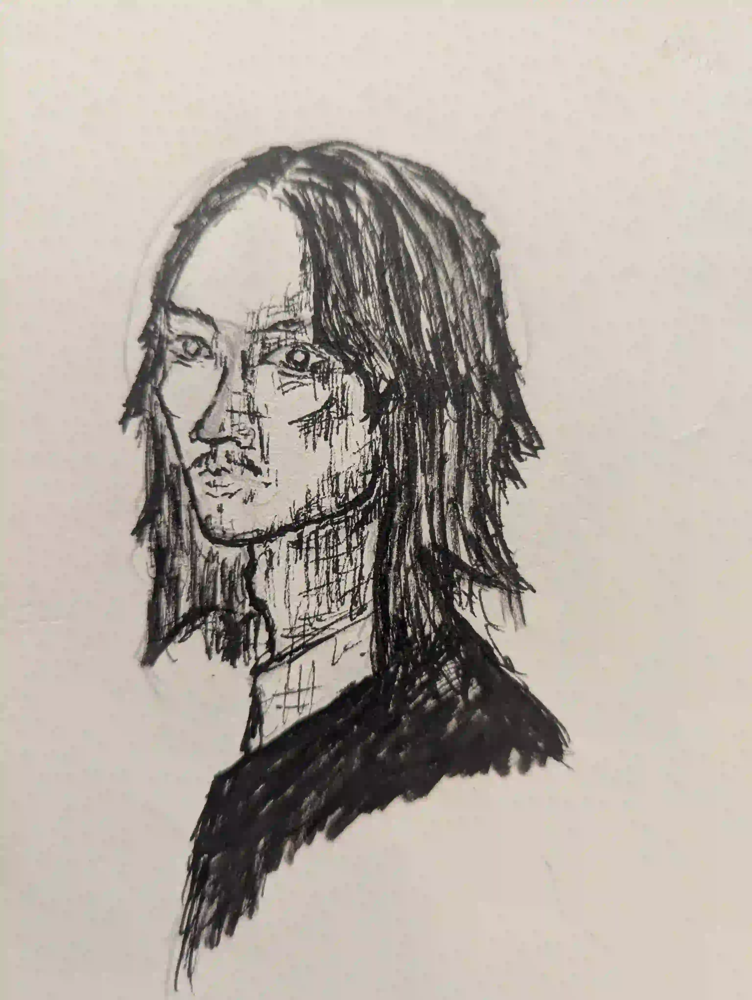
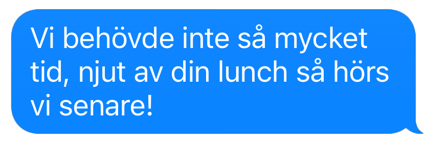

DEL 4
Tjejerna

Mia sväljer till, det tar emot men hon behöver sitt jobb.
"Du förresten, en sista sak." Hon tvekar och funderar. Hon måste ju säga något om lappen. "Jag hittade detta bland posten från receptionen, det såg inte ut som en vanlig affärskorrespondens," säger hon samtidigt som hon försöker låta så neutral som möjligt.
Jonathan tar lappen, hans ögon rör sig över den, de vidgar sig lite men det är nästan att Mia inte märker något. Till sist börjar Jonathan: "Jag förstår, detta är inget du behöver tänka mer på, jag antar att du inte visat detta för någon annan?"
Jag svarar hastigt: "Nejdå!"
Han ler lite smått och fortsätter: "Så bra då, jag är så tacksam att jag kan lita på dig, vissa i din position hade kanske försökt utnyttja denna informationen på något sätt."
Mia hör orden men själva tanken av att vara någon som utpressar sin chef får henne att rysa. Att berätta hela situationen för Camilla kändes jobbigt nog, men hon hade nog aldrig kommit på tanken att köra en utpressning av Jonathan för hans lustfyllda misstag. Det känns mer som något som bara sker på film. Hon skrattar till ett avväpnande skratt som dövar tystnaden i rummet.
Mia svarar. "Det är ju din ensak."
Det blir tyst för en stund och stämningen känns stel. Kanske inte så konstigt.
Jonathan verkar nöjd med svaret och går vidare i dagens agenda. "Då tror jag nästa punkt i dagordningen blir mötet på Dockan. Jag ska träffa en vän och potentiell affärspartner på en restaurang där. Det skulle vara bra om du var med till en början och föra lite anteckningar, sen kommer vi nog vilja ha lite tid att bara umgås. Då kan du ta lite tid för dig själv eller om du har något arbete att utföra."
Jonathan reser sig och gestikulerar bort, utanför restaurangen. "Han är nog där när som helst nu," förklarar han.
Mia hann inte riktigt äta men tänker att det säkert kan finnas tid för det senare. En oändlig mängd lunchmöten men någon lunch ser hon sällan.

Kära läsare.
Du kan nu börja röra dig mot Dockan.
Mias fingrar dansar över tangentbordet på hennes laptop. Hon är van vid den snabba takten på Jonathans möten. Alla detaljer om vad som ska hända lämnas vaga men viktiga datum, budgetar och strategier tecknas ner. Jonathan affärspartner är en mörkhårig man med ett långsmalt utseende. När det är Jonathans tur att prata känner Mia hur han slänger blickar åt hennes håll. De känns kyliga och studerande och väcker ett obehag i henne.
Jonathans vän visar sig heta Kim men mycket mer får Mia inte veta. Mötet når sitt slut, hennes anteckningar är numera fyllda med o-specifik information.
"Ja, då tror jag vi har allt vi behöver från dig Mia," säger Jonathan och ler mot henne smått.
Kim kollar ut mot fönstret som blickar ut mot småbåtshamnen."Okej! Då tar jag nog lunch," svarar Mia och reser sig upp.
Mia rör sig genom restaurangen, en servitör leder henne till ett mindre bord i en annan sektion av restaurangen. Hon sätter sig mot en vägg och beställer en skaldjurssallad. Servitören är fint klädd och restaurangens inredning ger intrycket av ett ställe Mia aldrig hade haft råd att gå till. En av de få fördelarna med ett jobb för Jonathan ger en.
Servitören ler, tackar för sig och rör sig bort mot köket. Mia tar ett andetag och möts av den relativa tystnaden av en glest befolkad restaurang, det är ju egentligen ganska sent för lunch. Hon lägger huvudet mot väggen och börjar höra dova röster, väggen är tunn och man hör rösterna tydligt om man lyssnar noga. Så snart Mia slutar fokusera på det etiska dilemmat om det är otrevligt att tjuvlyssna eller inte, inser hon att rösterna hon hör är sitt före detta sällskap.
Samtalet är nedtystat och mer intensivt än vad man hade väntat sig av två vänner som pratar om vad som hänt sen senast.
"Så de är redo nu?" hörs Kim säga.
Jonathan svarar: "Ja, tjejerna är på plats."
"Och täckmanteln? Fortfarande intakt?"
"Ja, de är alla fullt övertygade att vi bara ska på solsemester tillsammans."
Något känns fel i Mia, en knut i magen. Kim fortsätter: "Bra, köparen i Bukarest kommer ge mycket pengar för tre i så bra skick."
Jonathan grymtar något positivt i svar och säger: "Mmhh, bra, men efter den här gången måste vi lösa någon annan för min roll, den här branschen är för riskabel för mig. Jag och min fru växer i inflytande, och om något hade kommit ut hade vi blivit så begravda att vi aldrig sett solen igen."
Kim andas ett hastigt andetag genom näsan som om han hört något roligt. "Ja, jag förstår, prostitutionsringar är du kanske lite för fin för nu, men jag rekommenderar starkt att du inte glömmer de vännerna som satte dig där du är nu."
Helt plötsligt hoppar Mia till av en högre röst precis vid henne. Med stirriga ögon fäster hon blicken vid en skål som ställs på bordet framför henne. Hennes frågande blick måste vara enkel att tolka för servitören som nu är tillbaka. Han ler och lutar huvudet lite roat.
"Din sallad. Smaklig måltid."
När servitörens närvaro inte längre stoppar henne från att fokusera på samtalet inser hon att rösterna är lite längre bort, som att de står upp några steg från bordet.
"Det var bra att vi kunde ses, mina kollegor kommer vara glada att allt är i ordning, vi har en förare redo så vi behöver bara den exakta platsen," säger Kim, avslappnad och kall.
Jonathan svarar hastigt: "Åh, just så, som vanligt är de på The More, Sasha 13, Maria 29, Annie 48."
Kim gör några positiva läten medan han verkar knappa in något i sin mobil. När ljudet av hans tummar mot skärmen upphör svarar han: "Då hör vi av oss på det vanliga sättet senare, ha en fin semester, J."
Ett tillfredsställt läte hörs från Jonathan. Några tiotals sekunder går, sedan får Mia ett sms. Det är från Jonathan:
"The More, The More Hotel," det finns ett sånt här ute, minns hon. "Sasha - Maria - Annie," upprepar hon i sitt huvud. "13 - 29 - 48."
Hon stadgar sig i någon sekund, ställer sig bestämt upp och rör sig mot dörren.
Här ska spelaren få information om hur de går tillväga. Instruktioner, hint, gåtor, osv.